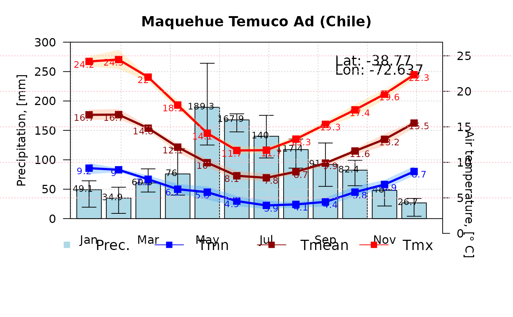

Climograph
climograph.RdFunction to draw a climograph based on precipitation and air temperature data, with several options for customisation.
Usage
climograph(pcp, tmean, tmx, tmn, na.rm=TRUE,
from, to, date.fmt="%Y-%m-%d",
main="Climograph", pcp.label="Precipitation, [mm]",
tmean.label="Air temperature, [\U00B0 C]", start.month=1, pcp.solid.thr,
pcp.ylim, temp.ylim,pcp.col="lightblue", pcp.solid.col="skyblue2",
tmean.col="darkred", tmn.col="blue", tmx.col="red",
pcp.labels=TRUE,
tmean.labels=TRUE, tmx.labels=TRUE, tmn.labels=TRUE,
pcp.labels.cex=0.8, temp.labels.cex=0.8,
pcp.labels.dx=c(rep(ifelse(plot.pcp.probs, -0.25, 0.0),6),
rep(ifelse(plot.pcp.probs, -0.25, 0.0),6)),
pcp.labels.dy=rep(2, 12),
temp.labels.dx=c(rep(-0.2,6), rep(0.2,6)), temp.labels.dy=rep(-0.4, 12),
plot.pcp.probs=TRUE, pcp.probs=c(0.25, 0.75),
plot.temp.probs=TRUE, temp.probs=c(0.25, 0.75),
temp.probs.col=c("#3399FF", "#FF9966", "#FFCC66"),
temp.probs.alpha=0.3,
lat, lon
)Arguments
- pcp
variable of type zoo with monthly, daily or subdaily precipitation data.
- tmean
variable of type 'zoo' with monthly, daily or subdaily mean temperature data.
- tmx
variable of type 'zoo' with monthly, daily or subdaily maximum temperature data.
ONLY used (together withtmn) whentmeanis missing.- tmn
variable of type 'zoo' with monthly, daily or subdaily minimum temperature data. ONLY used (together with
tmx) whentmeanis missing.- na.rm
Logical. Should missing values be removed?
-) TRUE : the monthly values are computed considering only those values different from NA
-) FALSE: if there is AT LEAST one NA within a month, the resulting average monthly value is NA .- from
OPTIONAL, used for extracting a subset of values.
Character indicating the starting date for the values to be extracted. It must be provided in the format specified bydate.fmt.- to
OPTIONAL, used for extracting a subset of values.
Character indicating the ending date for the values to be extracted. It must be provided in the format specified bydate.fmt.- date.fmt
Character indicating the format in which the dates are stored in dates, from and to. See
formatinas.Date.
ONLY required whenclass(dates)=="factor"orclass(dates)=="numeric".- main
Character representing the main title of the plot.
- pcp.label
Character used in the legend to represent the monthly average precipitation (mostly thought for languages different from English).
- tmean.label
Character used in the legend to represent the monthly average temperature (mostly thought for languages different from English).
- start.month
[OPTIONAL]. Only used when the (hydrological) year of interest is different from the calendar year.
numeric in [1:12] indicating the starting month of the (hydrological) year. Numeric values in [1, 12] represents months in [January, December]. By default
start.month=1.- pcp.solid.thr
[OPTIONAL]. Only used when using (sub)daily precipitation and temperature are gives as input data.
numeric, indicating the temperature, in degrees Celsius, used to discriminate between solid and liquid precipitation.When daily
tmean <= pcp.solid.thrthe precipitation for that day is considered as solid precipitation.- pcp.ylim
[OPTIONAL] numeric of length 2 with the the range used for the precipitation axis. The second value should be larger than the first one.
- temp.ylim
[OPTIONAL] numeric of length 2 with the the range used for the secondary temperature axis. The second value should be larger than the first one.
- pcp.col
Color used in the legend to represent the monthly average precipitation.
- pcp.solid.col
Color used in the legend to represent the monthly average solid precipitation.
- tmean.col
Color used in the legend to represent the monthly average temperature.
- tmn.col
Color used in the legend to represent the monthly minimum temperature.
- tmx.col
Color used in the legend to represent the monthly maximum temperature.
- pcp.labels
logical. Should monthly precipitation values to be shown above the bars?. By default
pcp.labels=TRUE.- tmean.labels
logical. Should monthly mean temperature values to be shown above the lines?. By default
tmean.labels=TRUE.- tmx.labels
logical. Should monthly maximum temperature values to be shown above the lines?. By default
tmx.labels=TRUE.- tmn.labels
logical. Should monthly minimum temperature values to be shown above the lines?. By default
tmn.labels=TRUE.- pcp.labels.cex
numeric giving the amount by which plotting characters used to show the numeric values of monthly precipitation values are scaled relative to the default.
It is only used whenpcp.labels=TRUE.- temp.labels.cex
numeric giving the amount by which plotting characters used to show the numeric values of monthly air temperature values (mean, maximum, minimum) are scaled relative to the default.
It is only used whentmean.labels=TRUEortmx.labels=TRUEortmn.labels=TRUE.- pcp.labels.dx
numeric of length 12 giving the amount of horizontal coordinate positions that have to be used to shift the labels of monthly precipitation values.
It is only used whenpcp.labels=TRUE.
Lengths smaller than 12 are recycled and larger lengths are not used.- pcp.labels.dy
numeric of length 12 giving the amount of vertical coordinate positions that have to be used to shift the labels of monthly precipitation values.
It is only used whenpcp.labels=TRUE.
Lengths smaller than 12 are recycled and larger lengths are not used.- temp.labels.dx
numeric of length 12 giving the amount of horizontal coordinate positions that have to be used to shift the labels of monthly air temperature values (mean, maximum, minimum).
It is only used whentmean.labels=TRUEortmx.labels=TRUEortmn.labels=TRUE.
Lengths smaller than 12 are recycled and larger lengths are not used.- temp.labels.dy
numeric of length 12 giving the amount of vertical coordinate positions that have to be used to shift the labels of monthly air temperature values (mean, maximum, minimum).
It is only used whentmean.labels=TRUEortmx.labels=TRUEortmn.labels=TRUE.
Lengths smaller than 12 are recycled and larger lengths are not used.- plot.pcp.probs
logical used to decide whether to show uncertainty values around the monthly mean precipitation values. By default
plot.pcp.probs=TRUE.
Whenplot.pcp.probs=TRUEthepcp.probsargument is used to define the values of the lower an upper uncertainty bounds.- pcp.probs
numeric of length 2. It defines the quantile values used to compute the lower an upper uncertainty bounds for each one of the 12 monthly precipitation values.
By defaultpcp.probs=c(0.25, 0.75), which indicates that the quantiles 0.25 and 0.75 are used to compute the lower an upper uncertainty bounds for each one of the 12 monthly precipitation values. Ifpcpis a (sub)daily zoo object, it is first aggregated into monthly values usingmean, and then thepcp.probsquantiles are computed over all the monthly values belonging to a calendar month.- plot.temp.probs
logical used to decide whether to show uncertainty values around the monthly mean temperature values. By default
plot.temp.probs=TRUE.
Whenplot.temp.probs=TRUEthetemp.probsargument is used to define the values of the lower an upper uncertainty bounds.- temp.probs
numeric of length 2. It is used to define quantile values used to compute the lower an upper uncertainty bounds for each one of the 12 monthly mean temperature values.
Iftmxandtmnare provided, thentemp.probsare used to compute the lower an upper uncertainty bounds for each one of the 12 monthly maximum/minimum temperature values.
By defaulttemp.probs=c(0.25, 0.75), which indicates that the quantiles 0.25 and 0.75 are used to compute the lower an upper uncertainty bounds for each one of the 12 monthly mean(maximum/minimum) values. Iftmx/tmnis provided and is a (sub)daily zoo object, it is first aggregated into monthly values usingmean, and then thetemp.probsquantiles are computed over all the monthly values belonging to a calendar month.- temp.probs.col
character of length 3, with the colors used to for plotting the uncertainty bands around the average monthly values of the minimum, mean and maximum air temperature, respectively.
Iftmxandtmnare not provided by the user, the second element oftemp.probs.colwill still be used to define the color of the uncertainty band around the mean monthly values of air temperature.- temp.probs.alpha
numeric of length 1, with the factor used to modify the opacity of
temp.probs.col. Typically in [0,1], with 0 indicating a completely transparent colour and 1 indicating no transparency.- lat
[OPTIONAL] numeric or character used to show the latitude for which the climograph was plotted for.
- lon
[OPTIONAL] numeric or character used to show the longitude for which the climograph was plotted for.
Author
Mauricio Zambrano-Bigiarini, mzb.devel@gmail
Note
If the output climograph present some mixed or not legible characters, you might try resizing the graphical window and run climograph again with the new size, until you get the climograph in the way you want to.
Examples
######################
## Ex1: Loading the DAILY precipitation, maximum and minimum air temperature at
## station Maquehue Temuco Ad (Chile)
data(MaquehueTemuco)
# Subsetting to only the 1981-1990 temporal period
MaquehueTemuco <- window(MaquehueTemuco, start="1981-01-01", end="1990-12-31")
pcp <- MaquehueTemuco[, 1]
tmx <- MaquehueTemuco[, 2]
tmn <- MaquehueTemuco[, 3]
## Plotting a full climograph
m <- climograph(pcp=pcp, tmx=tmx, tmn=tmn, na.rm=TRUE,
main="Maquehue Temuco Ad (Chile)", lat=-38.770, lon=-72.637)

if (FALSE) { # \dontrun{
## Plotting a climograph with uncertainty bands around mean values,
## but with no labels for tmx and tmn
m <- climograph(pcp=pcp, tmx=tmx, tmn=tmn, na.rm=TRUE, tmx.labels=FALSE, tmn.labels=FALSE,
main="Maquehue Temuco Ad (Chile)", lat=-38.770, lon=-72.637)
## Plotting a climograph with uncertainty bands around mean values, but with no labels for
## tmx, tmn and pcp
m <- climograph(pcp=pcp, tmx=tmx, tmn=tmn, na.rm=TRUE,
pcp.labels=FALSE, tmean.labels=FALSE, tmx.labels=FALSE, tmn.labels=FALSE,
main="Maquehue Temuco Ad (Chile)", lat=-38.770, lon=-72.637)
## Plotting a climograph with no uncertainty bands around mean values
m <- climograph(pcp=pcp, tmx=tmx, tmn=tmn, na.rm=TRUE, plot.pcp.probs=FALSE, plot.temp.probs=FALSE,
main="Maquehue Temuco Ad (Chile)", lat=-38.770, lon=-72.637)
## Plotting the most basic climograph: only mean values of precipiation and air temperature
m <- climograph(pcp=pcp, tmean=0.5*(tmn+tmx), na.rm=TRUE, plot.pcp.probs=FALSE,
plot.temp.probs=FALSE, main="Maquehue Temuco Ad (Chile)",
lat=-38.770, lon=-72.637)
## Plotting a full climograph, starting in April (start.month=4) instead of January (start.month=1),
## to better represent the hydrological year in Chile (South America)
m <- climograph(pcp=pcp, tmx=tmx, tmn=tmn, na.rm=TRUE,
start.month=4, temp.labels.dx=c(rep(-0.2,4), rep(0.2,6),rep(-0.2,2)),
main="Maquehue Temuco Ad (Chile)", lat=-38.770, lon=-72.637)
## Plotting a full climograph with monthly data
pcp.m <- daily2monthly(pcp, FUN=sum)
tmx.m <- daily2monthly(tmx, FUN=mean)
tmn.m <- daily2monthly(tmn, FUN=mean)
m <- climograph(pcp=pcp.m, tmx=tmx.m, tmn=tmn.m, na.rm=TRUE,
main="Maquehue Temuco Ad (Chile)", lat=-38.770, lon=-72.637)
} # }